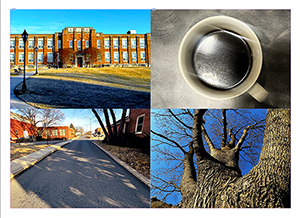

Javier Valdez Photo Project |
||
| Home Print Project Photo Project Video Project | ||
|

More Photos at Photo Project |
For this photography project, we were assigned to capture four distinct images using our smartphones, each demonstrating different composition techniques discussed during our class sessions. To ensure diversity in our shots, we were instructed to take two photographs indoors and two outdoors, allowing us to explore how different environments and lighting conditions influence composition. Once we had captured our images, the next phase involved post-processing using Adobe Photoshop. This step was crucial in refining our photos and bringing out their full potential. We focused on adjusting elements such as brightness, contrast, and color balance to enhance the overall aesthetic and ensure that the composition techniques were effectively highlighted.
After editing, we compiled our work into a cohesive four-page document using Adobe InDesign. Each page was dedicated to one photograph and included both the original and the edited versions. Accompanying each set of images was a detailed description outlining the specific composition technique employed, the rationale behind our creative choices, and the adjustments made during the editing process. This comprehensive presentation allowed us to articulate our creative process and demonstrate our technical skills in both photography and design. The final step was to submit our completed project through D2L, our digital learning platform. This assignment not only honed our technical abilities in photography and digital editing but also emphasized the importance of thoughtful composition in visual storytelling. It was a valuable exercise in combining artistic vision with technical execution. |
|
|
© 2025 Javier Valdez | ||